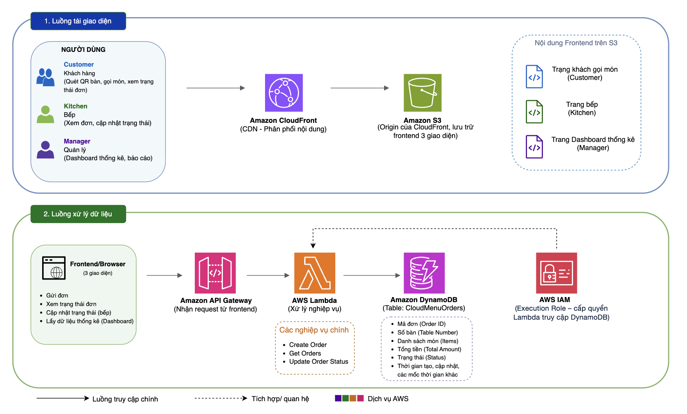

Proposal
1. Project Overview
CloudMenu is a table-side online ordering system that allows customers to scan a QR Code assigned to each table using their mobile devices to access the menu, select dishes, and submit orders directly to the kitchen.
The system consists of three main user groups:
- Customers: Browse the menu, search/filter dishes, manage the shopping cart, place orders, and track order status.
- Kitchen Staff: Receive orders, view order details, and update the food preparation status.
- Admin/Manager: Monitor a statistical Dashboard showing the total number of orders, revenue, order status, revenue by table, and the most frequently ordered dishes.
CloudMenu is proposed to be deployed using a Serverless Architecture on AWS to reduce operational costs, provide scalability, and accommodate the system’s variable traffic patterns.
2. Problems and Solution
Current Problems
The traditional ordering process may present several limitations:
- Customers have to wait for staff to take their orders.
- Errors may occur when recording dishes and quantities manually.
- Kitchen staff may have difficulty monitoring and updating order statuses in real time.
- Managers may find it difficult to consolidate revenue and business statistics.
- The system needs to handle increased traffic during peak hours.
Solution
CloudMenu uses a dedicated QR Code for each table, allowing customers to directly access the menu and place orders. Requests are processed through a Serverless Architecture:
QR Code → Frontend → API Gateway → Lambda → DynamoDB
The proposed solution provides the following benefits:
- Automatically identifies the table number through the QR Code.
- Reduces manual operations and minimizes ordering errors.
- Centralizes order data in DynamoDB.
- Provides automatic scalability through AWS Lambda.
- Provides a Dashboard for managers to monitor business activities.
3. Solution Architecture

The main components include:
Frontend
- Amazon S3: Stores the HTML, CSS, and JavaScript files of CloudMenu.
- Amazon CloudFront: Distributes frontend content through a CDN to reduce access latency.
Backend
- Amazon API Gateway: Provides RESTful APIs and receives requests from the frontend.
- AWS Lambda: Handles business logic such as retrieving menus, creating orders, updating order statuses, and retrieving statistical data.
- Amazon DynamoDB: Stores menu, order, table, and order status data.
Security: AWS IAM: Manages access permissions between AWS services and controls administrative access to the system.
4. Timeline (8 weeks)
-
Weeks 1–2 — Analysis & AWS Foundation
- Week 1: Finalize the functional requirements and NFRs of CloudMenu; analyze user groups and the QR → Menu → Order → Kitchen → Dashboard workflow.
- Week 2: Finalize the Serverless Architecture; set up the AWS environment and IAM permissions; identify the roles of S3, CloudFront, API Gateway, Lambda, and DynamoDB.
-
Weeks 3–4 — Serverless Frontend & Backend Deployment
- Week 3: Deploy the Frontend to Amazon S3 and distribute it through CloudFront; configure the domain and verify accessibility.
- Week 4: Build and deploy API Gateway + AWS Lambda; implement core APIs for menu, cart, and orders; integrate Lambda with DynamoDB.
-
Weeks 5–6 — Data, Security & Business Logic
- Week 5: Design and finalize the DynamoDB data structure; implement order management, status updates, and the statistical Dashboard..
- Week 6: Review IAM, API access, and security; apply the least-privilege principle; verify data flows between API Gateway, Lambda, and DynamoDB.
-
Weeks 7–8 — Testing & Finalization
- Week 7: Perform end-to-end testing for Customer, Kitchen Staff, and Admin/Manager workflows; use CloudWatch to monitor Lambda/API logs and errors
- Week 8: Evaluate performance, scalability, and costs; finalize the architecture documentation, deployment guide, and CloudMenu on AWS report.
5. Budget
CloudMenu is designed to use AWS Serverless services and the AWS Free Tier during the testing phase to minimize deployment costs.
Main Services and Estimated Costs
| AWS Service |
Component / Usage |
Cost (USD/month) |
| Amazon S3 |
Frontend hosting + static assets |
$0 - $3 |
| Amazon CloudFront |
CDN + data transfer |
$2 - $15 |
| Amazon API Gateway |
REST API + API requests |
$0 - $10 |
| AWS Lambda |
Backend functions + invocations |
$0 - $8 |
| Amazon DynamoDB |
Menu + Orders + Table data |
$0 - $10 |
| AWS IAM |
Users / Roles / Policies |
No direct AWS charge |
| TOTAL AWS COST |
|
$2 - $50 |
Cost control recommendations:
- Take advantage of the AWS Free Tier during development and testing.
- Configure AWS Budgets to receive alerts when costs exceed the defined budget threshold.
- Optimize S3 storage and use Lifecycle Policies as data volume increases.
- Regularly check and remove unused testing resources.
- Prioritize a Serverless Architecture to avoid costs associated with continuously running servers.
6. Risks
Unexpected Increase in AWS Costs
Mitigation: Configure AWS Budgets and monitor costs through AWS Cost Management.
Sudden Increase in Traffic
Mitigation: Use a Serverless Architecture with automatic scalability to handle traffic spikes.
Unauthorized API Access
Mitigation: Use IAM and appropriate authentication and authorization mechanisms.
Data Loss or Accidental Data Deletion
Mitigation: Enable Backup and Point-in-Time Recovery for DynamoDB.
QR Code Used for the Wrong Table
Mitigation: Assign a unique table identifier to each QR Code and validate the table information when creating an order.
Duplicate Order Submissions
Mitigation: Implement mechanisms to detect and handle duplicate requests.